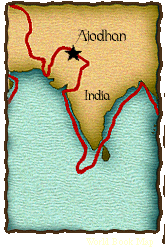

|
Burning widow at Ajodhan, India In India, I heard that many women kill themselves when their husband dies. This seemed so shocking to me that I had to witness it for myself. The burning of the wife after her husband’s death is regarded by them as a commendable act, but is not compulsory. I rode out with my companions to see what exactly these women did in this burning. The drummers and trumpeters were standing by waiting for the woman’s coming. She joined her hands above her head in salutation to the fire and cast herself into it. At the same moment the drums, trumpets, and bugles were sounded, and men threw on her the firewood they were carrying, and others put those heavy balks on top of her to prevent her moving. When I saw this, I nearly fell off my horse. |
 |